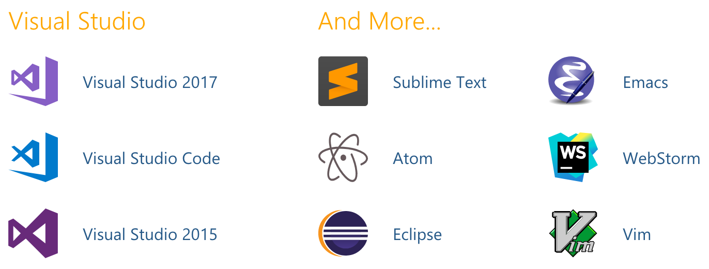
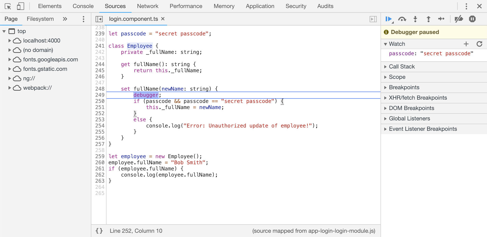
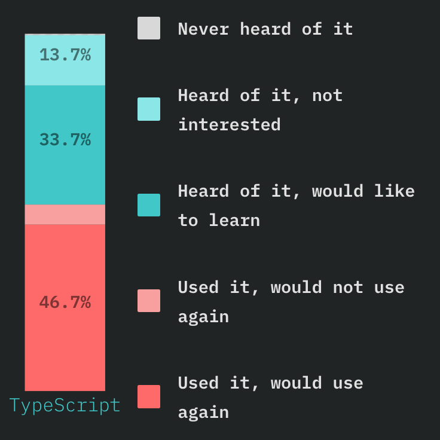
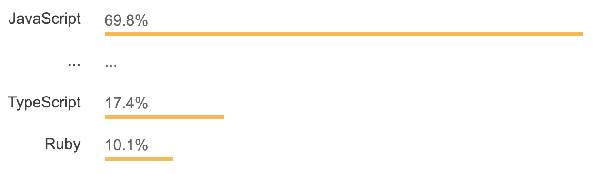
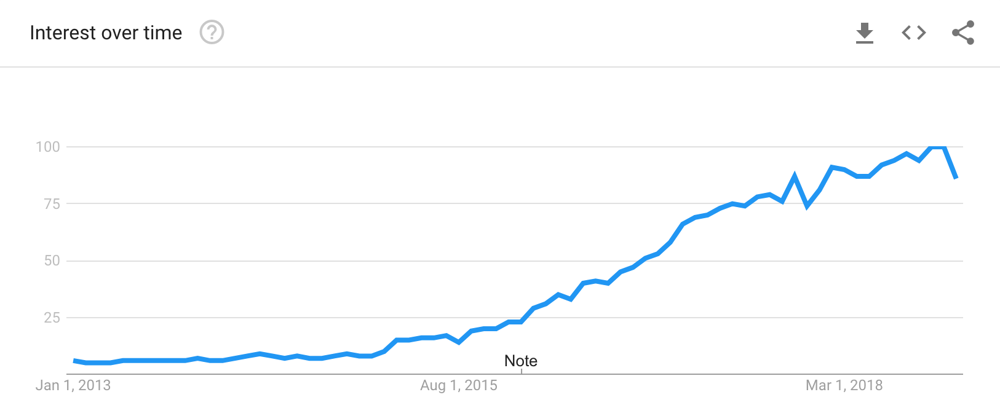

TypeScript brings familiar OOP constructs to JavaScript (classes, interfaces)
Any JS code is also valid (syntactically correct) TS code. It might compile with errors, but there still will be output. Renaming files from .js to .ts will just work.
Supports latest modern JS features
Can be compiled to all major versions of JavaScript (ES3, ES5, ES6, ES7)
TypeScript is portable across browsers, devices, and operating systems. It can run on any environment that JavaScript runs on.
let color: string = "blue";
color = 'red';
let fullName: string = `Bob Bobbington`;
let sentence: string = `Hello, my name is ${ fullName }.`
Array
let list: number[] = [1, 2, 3];
let list: Array<number> = [1, 2, 3];
Basic types cont.
Tuple
let x: [string, number];
x = ["hello", 10]; // OK
x = [10, "hello"]; // Error
Enum
enum Color {Red, Green, Blue}
let c: Color = Color.Green;
Any
let notSure: any = 4;
notSure = "maybe a string instead";
notSure = false; // okay, definitely a boolean
let list: any[] = [1, true, "free"];
Void
function warnUser(): void { ... }
More about typing
TypeScript doesn't check type at runtime. There still might be errors because variable is of wrong type
Any and asserting type, handy but dangerous
foo as any;
<any>foo;
TypeScript is flexible. Typing is optional, types can be inference, duck typing is possible
Have useful union types
Typing examples
let a = string | number;
let x = 123; // x is a `number`
let y = "hello"; // y is a `string`
x = y; // Error: cannot assign `string` to a `number`
function add(a: number, b: number) {
return a + b;
} // function is inferred to return a number
type Person = { name: string; };
type Animal = { name: string; kind: string; };
const isPerson(p: Person): p is Person => !!p.name;
let a: Animal = { name: 'flocon', kind: 'cat' };
isPerson(a) // true
Interfaces
Interface declare the structure of variables, facilitate type-checking. They are powerful in TypeScript and have zero runtime JS impact
let myPoint: { x: number; y: number; }; // inline annotation
interface IPoint {
x: number; y: number;
}
let myPoint: IPoint; // equivalent with using interface
interface IPoint {
x: number; y: number;
}
// classes can implement interfaces
class MyPoint implements IPoint {
x: number; y: number; // Same as IPoint
}
Classes
class Greeter {
greeting: string;
constructor(message: string) {
this.greeting = message;
}
greet() {
return "Hello, " + this.greeting;
}
}
let greeter = new Greeter("world");
Generics
Instead of:
function identity(arg: number): number {
return arg;
}
function identity(arg: any): any {
return arg;
}
It's possible to work over a variety of types rather than a single one:
function identity(arg: T): T {
return arg;
}
let output = identity("myString"); // type of output will be 'string'
let output = identity("myString"); // type of output will be 'string'
External libraries
JavaScript libraries can be used with TypeScript
They can be decalred as any or declaration files named index.d.ts can be used
Packages from @types DefinitelyTyped can be used
Almost all popular packages have their TypeScript typings. More than 4200+ npm packages “typed” by the community
Tools and editors
Typing enables static language analysis, which facilitates tooling and IDE support
TSLint - checks code for readability, maintainability, and functionality errors (like RuboCop)

Debugging
With source maps when debugging in browser original .ts files will appear

webpacker gem for using Webpack to manage app-like JavaScript modules in Rails. Supports TypeScript with different UI frameworks (Angular, Vue.js, React)
Trends
growing interest
12th place in Stack Overflow popularity (17.4%)
80% would like to learn or use again according to state of JS survey



For the end few cons and impressions
Less flexibility and elegance then in dynamically typed language
Brings complexity and might be overhelming
Requires additonal build step, changes are not visible immediately
As JavaScript is developing separately, there might be some issues in the future because of differences
Code is more predictable, easier to debug and organized better